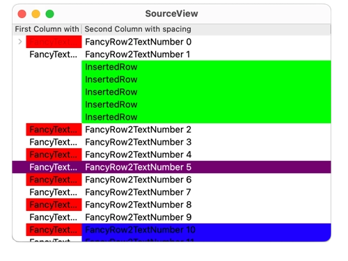

QtRemoteObjects WebSockets Applications
Using a non-QIODevice-based transport (QWebSocket) with QtRemoteObjects.
This example shares a QStandardItemModel over a web socket. The model can be edited in the window of the wsserver application, and the changes are propagated to the window of the wsclient application.
This is made possible by implementing a small QIODevice-derived wrapper, WebSocketIoDevice, for QWebSocket. SSL is used if Qt is compiled with support for it.

The WsServer Application
The wsserver application creates a QStandardItemModel with two columns and inserts data into it.
int main(int argc, char *argv[]) { QLoggingCategory::setFilterRules("qt.remoteobjects.debug=false\n" "qt.remoteobjects.warning=false"); QApplication app(argc, argv); const int modelSize = 100000; QStringList list; QStandardItemModel sourceModel; QStringList hHeaderList; hHeaderList << QStringLiteral("First Column with spacing") << QStringLiteral("Second Column with spacing"); sourceModel.setHorizontalHeaderLabels(hHeaderList); list.reserve(modelSize); for (int i = 0; i < modelSize; ++i) { QStandardItem *firstItem = new QStandardItem(QStringLiteral("FancyTextNumber %1").arg(i)); if (i == 0) firstItem->appendRow(addChild(2, 2)); QStandardItem *secondItem = new QStandardItem(QStringLiteral("FancyRow2TextNumber %1").arg(i)); if (i % 2 == 0) firstItem->setBackground(Qt::red); QList<QStandardItem*> row; row << firstItem << secondItem; sourceModel.invisibleRootItem()->appendRow(row); //sourceModel.appendRow(row); list << QStringLiteral("FancyTextNumber %1").arg(i); }
It then starts a QWebSocketServer bound to port 8088, and hosts the data model.
QWebSocketServer webSockServer{QStringLiteral("WS QtRO"), QWebSocketServer::NonSecureMode}; webSockServer.listen(QHostAddress::Any, 8088); QRemoteObjectHost hostNode; hostNode.setHostUrl(webSockServer.serverAddress().toString(), QRemoteObjectHost::AllowExternalRegistration); hostNode.enableRemoting(&sourceModel, QStringLiteral("RemoteModel"), roles);
When handling new connections, SSL is configured if Qt is compiled with support for it. Then a WebSocketIoDevice is created using the incoming WebSocketServer connection.
QObject::connect(&webSockServer, &QWebSocketServer::newConnection, &hostNode, [&hostNode, &webSockServer]{ while (auto conn = webSockServer.nextPendingConnection()) { #ifndef QT_NO_SSL // Always use secure connections when available QSslConfiguration sslConf; QFile certFile(QStringLiteral(":/sslcert/server.crt")); if (!certFile.open(QIODevice::ReadOnly)) qFatal("Can't open client.crt file"); sslConf.setLocalCertificate(QSslCertificate{certFile.readAll()}); QFile keyFile(QStringLiteral(":/sslcert/server.key")); if (!keyFile.open(QIODevice::ReadOnly)) qFatal("Can't open client.key file"); sslConf.setPrivateKey(QSslKey{keyFile.readAll(), QSsl::Rsa}); sslConf.setPeerVerifyMode(QSslSocket::VerifyPeer); conn->setSslConfiguration(sslConf); QObject::connect(conn, &QWebSocket::sslErrors, conn, &QWebSocket::deleteLater); #endif QObject::connect(conn, &QWebSocket::disconnected, conn, &QWebSocket::deleteLater); QObject::connect(conn, &QWebSocket::errorOccurred, conn, &QWebSocket::deleteLater); auto ioDevice = new WebSocketIoDevice(conn); QObject::connect(conn, &QWebSocket::destroyed, ioDevice, &WebSocketIoDevice::deleteLater); hostNode.addHostSideConnection(ioDevice); } });
A QTreeView is created with the QStandardItemModel as model. Then multiple timers are started with QTimer::singleShot to perform more modifications to the model.
QTreeView view; view.setWindowTitle(QStringLiteral("SourceView")); view.setModel(&sourceModel); view.show(); TimerHandler handler; handler.model = &sourceModel; QTimer::singleShot(5000, &handler, &TimerHandler::changeData); QTimer::singleShot(10000, &handler, &TimerHandler::insertData); QTimer::singleShot(11000, &handler, &TimerHandler::changeFlags); QTimer::singleShot(12000, &handler, &TimerHandler::removeData); QTimer::singleShot(13000, &handler, &TimerHandler::moveData); return app.exec();
The WsClient Application
The wsclient application creates a QWebSocket and a WebSocketIoDevice taking it as an argument.
QScopedPointer<QWebSocket> webSocket{new QWebSocket}; WebSocketIoDevice socket(webSocket.data());
If Qt is compiled with support for SSL, the client is configured with it.
#ifndef QT_NO_SSL // Always use secure connections when available QSslConfiguration sslConf; QFile certFile(QStringLiteral(":/sslcert/client.crt")); if (!certFile.open(QIODevice::ReadOnly)) qFatal("Can't open client.crt file"); sslConf.setLocalCertificate(QSslCertificate{certFile.readAll()}); QFile keyFile(QStringLiteral(":/sslcert/client.key")); if (!keyFile.open(QIODevice::ReadOnly)) qFatal("Can't open client.key file"); sslConf.setPrivateKey(QSslKey{keyFile.readAll(), QSsl::Rsa}); sslConf.setPeerVerifyMode(QSslSocket::VerifyPeer); webSocket->setSslConfiguration(sslConf); #endif
Then a QRemoteObjectNode is created, and setup to use the WebSocketIoDevice. Then it connects to wsserver.
QRemoteObjectNode node; node.addClientSideConnection(&socket); node.setHeartbeatInterval(1000); webSocket->open(QStringLiteral("ws://localhost:8088"));
A QTreeView is created to display the data from the server. The model is acquired from the node, and it is then set as the model of the QTreeView, which is then shown.
QTreeView view; view.setWindowTitle(QStringLiteral("RemoteView")); view.resize(640,480); QScopedPointer<QAbstractItemModelReplica> model(node.acquireModel(QStringLiteral("RemoteModel"))); view.setModel(model.data()); view.show(); return app.exec();